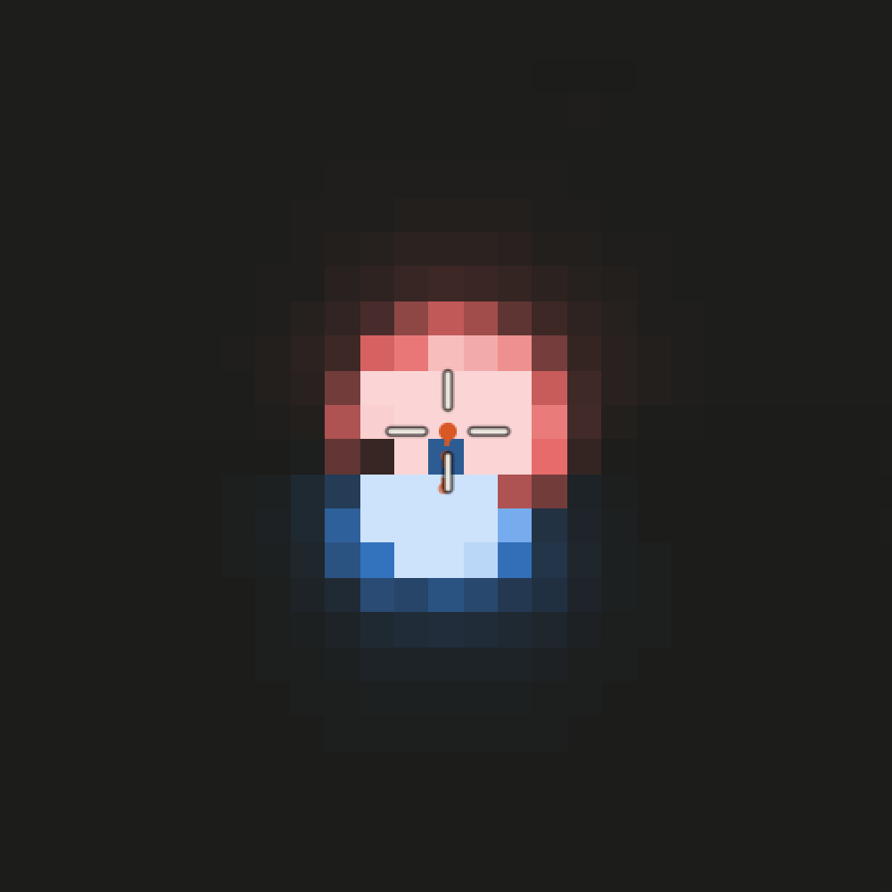

A web tool for watching NASA SPHEREx infrared images change over time
NASA Space Apps Challenge 2026 · Planet X and SPHEREx · Team NUPASA
Field of view 2′–30′ · quality flags per visit · Gaia and CatWISE overlays at each visit's date · every view is a shareable link

Barnard's Star, two visits a year apart. Blue: August 2025. Red: August 2026. It moved 10″ north.
Comparing its visits shows what moves or changes: nearby brown dwarfs, fast stars, asteroids, comets and variable stars. Blinking images is how Pluto was found, and how volunteers find brown dwarfs in WISE data today.
colours from 0.75 to 5 µm
between visits to every part of the sky
images in NASA's open archive so far
ε Indi B, a brown dwarf: water, methane and CO bands found automatically in its 102-band spectrum
Saturated stars get relative photometry. Absolute fluxes agree with 2MASS to about 2 % for our comparison star.
Our own index of all 1.6 M SPHEREx files answers in about 0.1 s, even when NASA's search service is down
Only the rows we need from each 64 MB file: about 2 MB for a 6′ field
Every exposure on one north-up grid, grouped into visits and stacked per detector
Photometry with each file's own PSF and per-pixel wavelengths gives spectra and light curves
to open a cached field (358 exposures)
to build a field nobody asked for before
for new SPHEREx data to reach the index
Follow a known object across visits while the stars trail. Coma and CO₂ tests rank how comet-like it looks: the comet 3I/ATLAS scores high, the asteroids Eros and Psyche score low.
Scan a field for moving sources, variable stars and very red objects, then open each candidate to check it.
An MCP server at seekin.space/mcp gives AI assistants the same 30 tools: search, build, analyse, export.
These find candidates, not confirmed discoveries. Long-baseline mode adds 2MASS, AllWISE and NEOWISE images for 26 years of motion.
Start with Barnard's Star: press Play, then switch to Difference.
Explore mode explains everything in plain words and has a guided tour of the five targets. Research mode shows errors and flags and exports FITS, CSV, VOTable and ADES.
Next: train the candidate filter on volunteer votes, and tell users when new SPHEREx data covers their field.
Team NUPASA · code: github.com/zabojeb/planet-x-spherex · SPHEREx data: JPL / Caltech, NASA